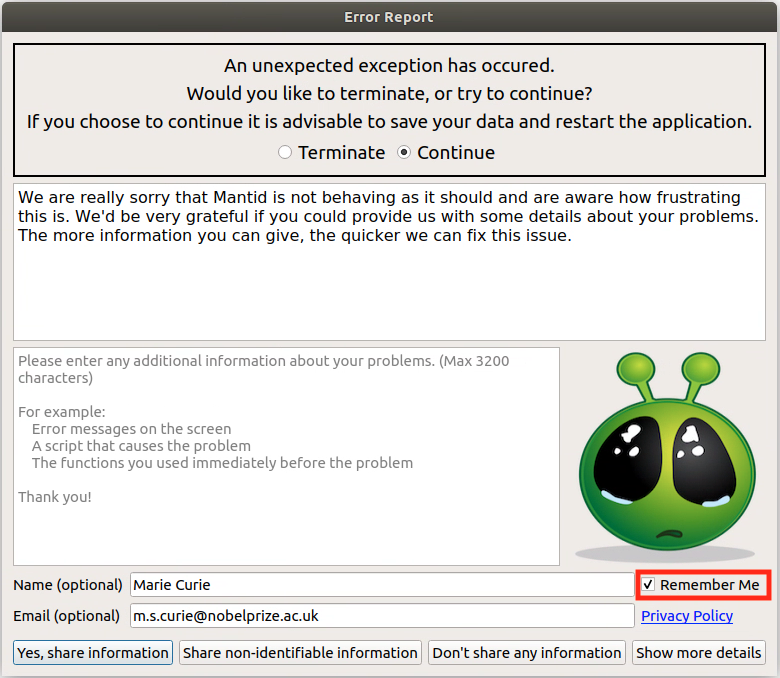
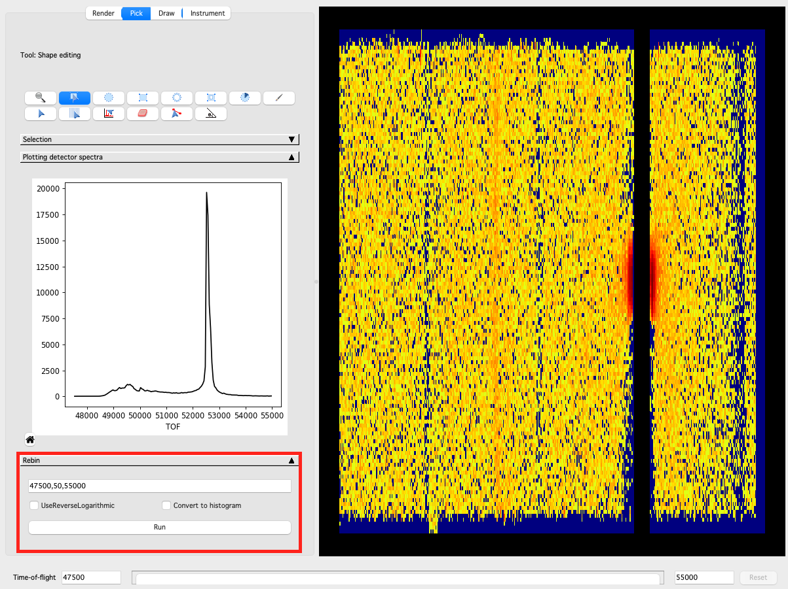

Mantid Workbench Changes#
New features#
Table workspaces can now have read-only columns added to them (
ws.addReadOnlyColumn(<TYPE>, <NAME>)). Existing columns can also be set to be read-only (ws.setColumnReadOnly(<INDEX>, <TRUE/FALSE>)).The Error Reporter can now remember and prefill the user’s name and email.

Improvements#
The algorithm browser has been tidied to reduce the number of single algorithm categories.
Cells containing vector data in a table workspace can now be viewed in the table workspace display.
The browse dialog in the file finder widget now opens at the path specified in the widget’s edit box (if the edit box contains a full path).
The font in python editor and IPython console are ensured to be monospace. It also ensures monospace on KDE Neon distributions too.
There is now a warning in the settings to say that changes to Project Recovery settings are only applied after restarting Workbench.
Bugfixes#
Fixed an issue when
save_asof a running script leads to crash upon script completion.Fixed arbitrary values not being accepted as the
Start TimeinStartLiveDataDialog.Fixed a bug where the option
SignedInPlaneTwoThetain ConvertSpectrumAxis would not give signed results.A number of plotting bugfixes have been made.
Fixed a bug where the toggle state of the
Grids on/offtoolbar button was incorrect when opening a 3D surface plot.Fixed plot bins not working on data with numeric X-axis.
Fixed a bug where the z-axis editor dialog was being initialised from the y-axis for a 3D plot.
Fixed a bug with autoscaling of colorfill plots from within the figure options.
Calls to EvaluateFunction, when plotting a guess or fit result in the fit browser of a figure, correctly ignores invalid data when requested.
The axes limits of Waterfall plots will now scale correctly upon initial plotting and overplotting.
The Z-axis limits of 3D plots can now be set on linux machines.
The colour of the canvas is now preserved when generating a script from a plot.
Fixed issue in DrILL when
ASCIIoutput was requested but the logs to save were not defined for that instrument.The
About Mantidpage now appears on a new full release, even if a recent nightly was previously launched.The instrument and facility combo-boxes are now always appropriately sized on the
About Mantidpage on macOS.Fixed a bug where copying data from a table displaying a matrix workspace was not working.
Workbench will no longer hang if an algorithm was running when Workbench was closed.
Fixed a bug in the editor where uncommenting using
ctrl+/wasn’t working correctly for lines of the form<optional whitespace>#code_here # inline comment.Commenting code in the editor using
ctrl+/will preserve indenting (i.e.#will be inserted at the position of the first non-whitespace character in the line).Empty group workspaces can now be deleted rather than needing to be ungrouped.
Fixed a bug in Project Recovery when attempting to remove non-empty directories and raising the error reporter.
Users are no longer able to add a peak to the Fit Property Browser by clicking with the interactive tool outside of the axes (which would cause an error).
An unhandled exeception no longer occurs when attempting to open the Fit Property Browser on a bin plot.
InstrumentViewer#
New features#
In the Pick Tab , a new panel allowing users to directly rebin their workspace now exists.
{kind=link}

The ability to rotate Ellipse and Rectangle shapes has been added.
The integration slider now supports discrete steps when the axis has discrete values.
A new button has been added to the Pick Tab to allow all of the detectors in the instrument to be summed in the miniplot without having to draw a shape.
Improvements#
In the Pick Tab integration is now by default over the entire detector unless some other curve is requested (such as by drawing a shape or picking a detector).
The Y-position of the HKL labels on the miniplot is now fixed in Axes coordinates so that the label remains visible as the zoom level changes.
Bugfixes#
Fixed a memory leak when closing the Instrument Viewer Widget window.
Fixed a bug where folding the Pick Tab crashed Mantid.
Fixed a crash on the Draw Tab when trying to sum detectors on a workspace which doesn’t have common bin edges across all spectra.
Getter for the Instrument Viewer Widget will return a fully constructed instance to avoid a segmentation fault.
Opening the Instrument Viewer Widget while a workspace is being reloaded will no longer cause a crash.
SliceViewer#
Bugfixes#
Fixed the
out-of-rangeerror when trying to access the projection matrix for a workspace with a non-Q axis before other Q axes.Fixed an issue to plot negative values with logarithm scaling.
Fixed the issue in
SNSLiveEventDataListenerwhen the instrument doesn’t have monitors.When entering a specific value for the center of the slicepoint of an integrated dimension/axis it will no longer jump to the nearest bin-center (this fix also affects
MDEventworkspaces as it was assumed each dimension had 100 bins for the purpose of updating the slider for a integrated dimension/axis).For
MDHistoworkspaces the projection matrix will be derived from the basis vectors on the workspace rather than searching for theW_MATRIXlog.Slicepoint center is now set to the correct initial value (consistent with position of slider) for
MDHistoworkspaces.Sliceviewer now closes when the underlying workspace is deleted.
Removed the peak table from peak viewer when the table is deleted in ADS (and now closes peak viewer if there are no more peak tables overlaid).
The peak actions combobox is updated when an overlain peak table is deleted.
Users are now able to export x/y cuts and 2D slices from the region of interest tool for
MDHistoworkspaces.Transposing data (i.e. swapping x and y axes) of
2D MDworkspace, now works without error.Fixed issues with the colorbar autoscale not updating correctly on zoom.
Stopped the ROI rectangle selection extents jumping discontinuously when the user tries to resize beyond the extent of the colorfill axes towards the line plot axes.
Sliceviewer will no longer dynamically rebin when viewing an
MDHistoworkspace that has been modified by a binary operation (e.g. MinusMD).